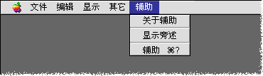

|
|
|
|
Mac OS ╦╗жЗ
|
сц║╟Mac OS ╦╗жЗ║╠©ивЖй╡ц╢ё©
║╟Mac OS ╦╗жЗ║╠йгфад╩иор╩╦Жвш╨о╟ОжЗо╣мЁё╛╩ь╢ПЁи╟ыиог╖сп╧ьхГ╨нй╧сц Mac OS ╣днйлБ║ё
кЭж╦╣╪дЗр╩╡╫р╩╡╫╣ьмЙЁихннЯё╛╦Ьфад╩ио╣доНд©╩╜х╕ё╛спй╠иУжа╢ЗдЗж╢пп╡╫жХ║ё
хГ╨н╢Р©╙║╟Mac OS ╦╗жЗ║╠ё©
йвохё╛╢сфад╩срио╫г╣д╡к╣╔жпя║х║ Finderё╛гп╩╩╣╫ Finder║ё
х╩╨С╢Р©╙║╟╦╗жЗ║╠╡к╣╔╡╒я║х║║╟╦╗жЗ║╠║ё

жВ╡к╣╔ | ╥╣╩ь
- Щ 1997 Apple Computer, Inc. All rights reserved.
- Щ 1997 ф╩╧Ш╣Гдт╧З╪йспоч╧╚к╬ё╛╟Фх╗кЫсп║ё